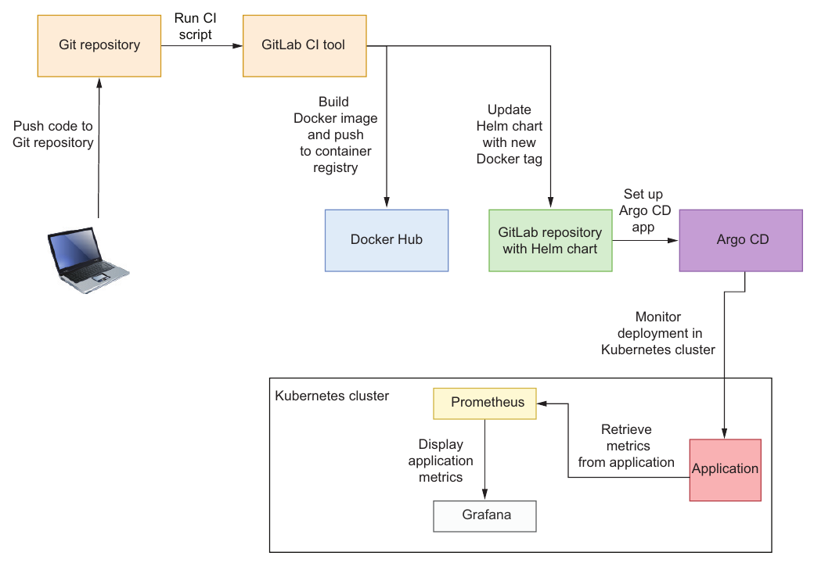
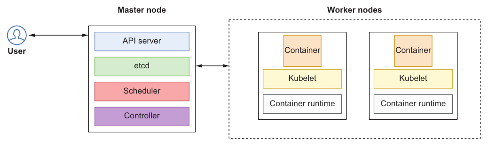
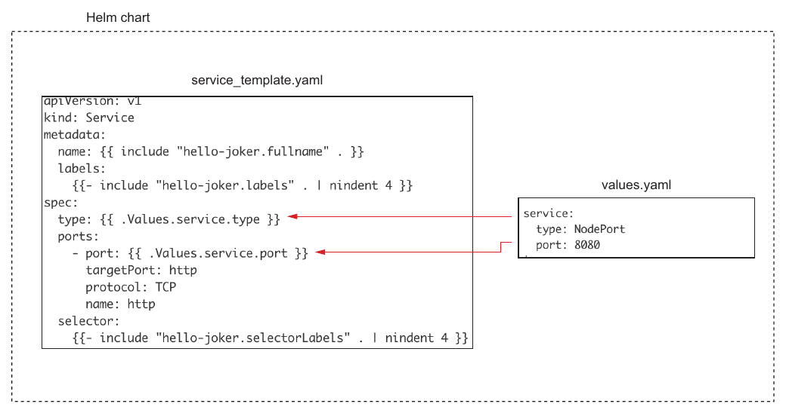
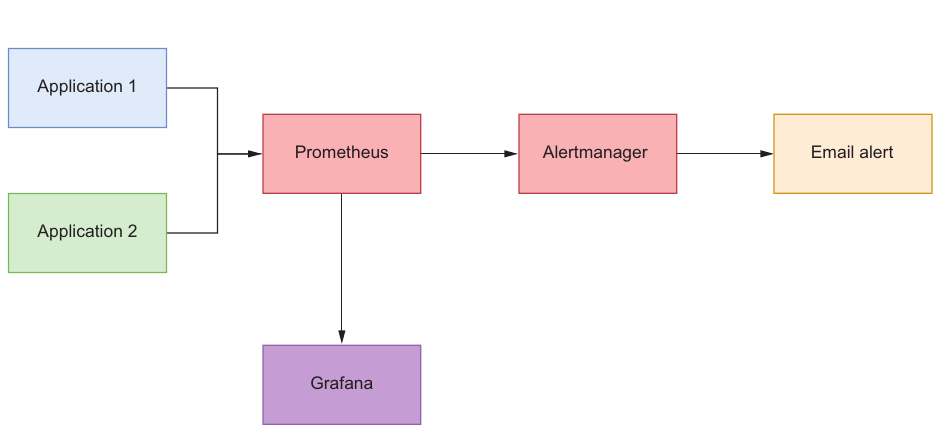

فصل ۳ · صص. ۴۲–۹۴
ساختن برنامه روی Kubernetes
Building applications on Kubernetes
Machine Learning Platform Engineering, 1st Edition
این فصل ستون زیرساختی پلتفرم ML را میسازد، با ابزارهایی که مخصوص ML نیستند ولی هر سیستم ML قابلاطمینان روی آنها میایستد (صص. ۴۲–۴۴). کل فصل روی یک برنامهی FastAPI کوچک به نام hello-joker جلو میرود که یک جوک تصادفی برمیگرداند (ص. ۴۵). اول Docker برنامه را با وابستگیهایش در یک image میگذارد که در container registry ذخیره میشود (صص. ۴۵–۵۱). بعد Kubernetes آن image را اجرا میکند: معماری master و worker، و objectهای pod و ReplicaSet و Deployment با rolling update و rollback، سه نوع service، namespace و ConfigMap و secret، و بستهبندی همه با Helm (صص. ۵۱–۸۰). سپس CI/CD: GitLab CI آزمون میکند و image میسازد و tag را در Helm chart بالا میبرد، و Argo CD cluster را با Git یکی نگه میدارد (صص. ۸۰–۸۸). دست آخر Prometheus و Grafana متریک برنامه را جمع و نمایش میدهند (صص. ۸۸–۹۴).
فهرست خود فصل (از فهرست مطالب کتاب)
- ۳.۱ container و ابزارها — ص. ۴۴
- ۳.۲ ابزار Docker — ص. ۴۵
- ۳.۲.۱ نوشتن کد برنامه — ص. ۴۷
- ۳.۲.۲ نوشتن Dockerfile — ص. ۴۸
- ۳.۲.۳ ساختن و push کردن image در Docker — ص. ۴۹
- ۳.۳ سیستم Kubernetes — ص. ۵۱
- ۳.۳.۱ نگاهی به معماری Kubernetes — ص. ۵۱
- ۳.۳.۲ ابزار kubectl — ص. ۵۲
- ۳.۳.۳ objectهای Kubernetes — ص. ۵۳
- ۳.۳.۴ شبکه و serviceها — ص. ۶۳
- ۳.۳.۵ objectهای دیگر — ص. ۶۹
- ۳.۳.۶ چارتهای Helm — ص. ۷۵
- ۳.۳.۷ جمعبندی — ص. ۸۰
- ۳.۴ continuous integration و deployment — ص. ۸۰
- ۳.۴.۱ ابزار GitLab CI — ص. ۸۱
- ۳.۴.۲ ابزار Argo CD — ص. ۸۶
- ۳.۵ ابزارهای Prometheus و Grafana — ص. ۸۸
از کتاب
مقدمه
روی نقشهی ذهنی، این فصل پایهی پلتفرم است: Kubernetes بهعلاوهی CI/CD و مانیتورینگ (ص. ۴۳). هدفها: بستهبندی یکسان با Docker، deploy و مدیریت روی Kubernetes، خودکارسازی با CI/CD و پاییدن سلامت برنامه (صص. ۴۲–۴۳).
از کتاب
۳.۱ container و ابزارها
کار serving مدل، چه ML سنتی چه LLM، از مهمترین بخشهای پلتفرم است و معمولاً با container انجام میشود. containerها باید منبع کافی بگیرند، زیر بار scale شوند، اگر زیرساخت افتاد جایگزین شوند، و همهی اینها خودکار و پاییده شود (ص. ۴۴).


| کار | ابزار کتاب |
|---|---|
| container | Docker |
| ارکستراسیون container | Kubernetes |
| CI | GitLab CI |
| CD | Argo CD |
| متریک و داشبورد | Prometheus و Grafana |
ابزارها وسیلهاند؛ Kubernetes انتخاب شده چون scalable و portable و cloud-agnostic است و همان workload روی دیتاسنتر و cloudهای مختلف یکسان اجرا میشود (ص. ۴۴).
از کتاب
۳.۲ ابزار Docker
مسئله: برنامهی تشخیص شیء روی لپتاپ به TensorFlow و NumPy و OpenCV و CMake وابسته است؛ در cloud، با توزیع لینوکس دیگری، همه باید دوباره نصب شوند (صص. ۴۵–۴۶). containerization برنامه را با وابستگیهایش طوری بستهبندی میکند که تقریباً همهجا اجرا شود (ص. ۴۶).
| حمل سنتی | حمل با کانتینر استاندارد |
|---|---|
| هر کالا بستهبندی و دستور حمل خودش را دارد | هر کالا در کانتینر هماندازه |
| بار و تخلیه زمانبر است | بار روی هر وسیله بیتغییر |
| ناسازگاری با وسیلهی حمل | استاندارد واحد |
بر پایهی قیاس کتاب (صص. ۴۶–۴۷): کالا برنامه است، دستور حمل وابستگیها و config، و کانتینر خود container.
۳.۲ ابزار Docker
۳.۲.۱ نوشتن کد برنامه
ص. ۴۷برنامه یک main.py با FastAPI است که با pyjokes جوک میدهد و با Uvicorn روی پورت 8083 اجرا میشود. FastAPI در ML برای ساختن APIهایی که مدل serve میکنند به کار میآید.
۳.۲ ابزار Docker
۳.۲.۲ نوشتن Dockerfile
ص. ۴۸فایل Dockerfile فهرست دستورهای ساختن است، یعنی همان manifest کانتینر در قیاس کتاب. هر دستور یک layer است:
| دستور | کار |
|---|---|
FROM | image پایه |
WORKDIR | پوشهی کاری |
RUN | اجرای فرمان، مثل نصب بسته |
COPY | کپی requirements و کد |
ARG و ENV | آرگومان زمان build و متغیر محیطی |
ENTRYPOINT | فرمان پیشفرض اجرای image |
۳.۲ ابزار Docker
۳.۲.۳ ساختن و push کردن image در Docker
صص. ۴۹–۵۱- یک image بستهای آمادهی ارسال است و container نمونهی در حال اجرای آن (ص. ۴۹).
- نام و tag، مثل
hello-joker:v1؛ tag میتواند نسخه یا commit ID باشد (ص. ۴۹). - فرمان
docker run -p 8081:8083پورت container را به پورت میزبان وصل میکند (صص. ۴۹–۵۰). - یک container registry مثل Git برای imageهاست: Docker Hub یا GCR یا ECR؛ orchestrator image را از آن pull میکند (ص. ۵۰).
از کتاب
۳.۳ سیستم Kubernetes
اگر container به خاطر Out of Memory بیفتد، چه کسی بالایش میآورد؟ چه کسی آن را روی سرور schedule میکند؟ جواب Kubernetes است، یا K8s (ص. ۵۱).
۳.۳ سیستم Kubernetes
۳.۳.۱ نگاهی به معماری Kubernetes
صص. ۵۱–۵۲یک نود یعنی نقطهی شکست واحد؛ پس cluster با چند نود، و یک نود master که نودهای worker را میپاید (ص. ۵۱).


| مؤلفه | نود | نقش |
|---|---|---|
| API server | master | frontend Kubernetes؛ فرمانها را میگیرد |
| etcd | master | key-value store توزیعشده؛ منبع حقیقت حالت cluster |
| scheduler | master | container را بر اساس CPU و حافظهی لازم و آزاد روی نود مینشاند |
| controller | master | ارکستراسیون؛ اگر container افتاد، تازهای راه میاندازد |
| container runtime | worker | اجرای container |
| kubelet | worker | مطمئن میشود containerها درست اجرا میشوند و به master گزارش میدهد |
۳.۳ سیستم Kubernetes
۳.۳.۲ ابزار kubectl
صص. ۵۲–۵۳ابزار خط فرمان برای کار با cluster: kubectl get nodes و kubectl cluster-info و بقیه.
۳.۳ سیستم Kubernetes
۳.۳.۳ objectهای Kubernetes
صص. ۵۳–۶۲هر object چهار بخش دارد: apiVersion و kind و metadata، که label را هم میگیرد، و spec (صص. ۵۳–۵۴).
| object | چه میکند | نکتهی کتاب |
|---|---|---|
| pod | کوچکترین واحد؛ یک نمونه از برنامه | چند container در یک pod شبکه و storage مشترک دارند، مثل اتاقهای یک آپارتمان؛ معمولاً یک container کمکی برای logging. با image غلط، وضعیت ErrImagePull و READY 0/1 (صص. ۵۳–۵۶) |
| ReplicaSet | تعداد podها را نگه میدارد | template و replicas و selector؛ selector اجازه میدهد podهای ازقبلموجود را هم بشمارد: با یک pod دستی، فقط دو pod تازه میسازد (صص. ۵۶–۵۸) |
| Deployment | روی ReplicaSet، با rolling update و rollback | YAML همان ReplicaSet است با kind: Deployment (صص. ۵۹–۶۰) |
روش rolling update در عمل (صص. ۶۰–۶۲): با تغییر tag به v2، ReplicaSet تازه یکییکی بالا میرود و قدیمی یکییکی پایین، از ۳ و ۰ تا ۰ و ۳. با imageی که وجود ندارد، ReplicaSet تازه فقط به ۱ میرسد، قدیمی پایین نمیآید و READY 3/3 ولی UP-TO-DATE 1 میماند؛ kubectl rollout undo آن pod خراب را برمیدارد. بیشتر برنامههای stateless، از جمله سرویسهای inference فصلهای بعد، با Deployment بالا میآیند (ص. ۶۲).
در stack مرجع، API پیشبینی یک Deployment است و هر rollout از Argo CD میآید؛ پس rollout خراب همان چیزی است که اینجا دیدید.
?نوبت شما · بعد از merge یک تغییر، Argo CD برنامه را Synced نشان میدهد ولی kubectl get deployment میگوید READY 3/3 و UP-TO-DATE 1. کاربرها خطا میبینند؟ و rollback درست کدام است؟دیدن پاسخ
خطا نمیبینند: Deployment podهای قدیمی را پایین نیاورده چون pod تازه سالم بالا نیامده (صص. ۶۱–۶۲). در GitOps، rollback را با revert همان commit در Git بکنید، نه با kubectl rollout undo، وگرنه Argo CD دوباره نسخهی خراب Git را اعمال میکند (صص. ۸۶–۸۸).
امتحان کنید
rolling update و rollback
باز کردن در صفحهی کامل ↗ · این شبیهسازی مدل خود vault از سازوکاری است که کتاب شرح میدهد.
۳.۳ سیستم Kubernetes
۳.۳.۴ شبکه و serviceها
صص. ۶۳–۶۹همهی podها IP دارند ولی گذرااند؛ service لایهی انتزاع پایداری است برای کاربرها و برنامههای دیگر، مثل frontendی که با backend حرف میزند (ص. ۶۳).
| ClusterIP | NodePort | LoadBalancer | |
|---|---|---|---|
| دسترسی | فقط داخل cluster | از بیرون با IP نود و یک پورت | از بیرون با load balancer ارائهدهندهی cloud |
| کاربرد | ارتباط داخلی | development و آزمون | production با load balancing خودکار |
| پیکربندی | سادهترین | پورت ثابت در بازهی ۳۰۰۰۰ تا ۳۲۷۶۷ | provision کردن load balancer بیرونی |
بر پایهی جدول p. 69.
- در NodePort سه پورت هست:
targetPortروی pod،portروی service وnodePortروی نود (ص. ۶۴). - نام service در ClusterIP همان hostname داخل cluster است و DNS آن را به IP نگاشت میکند (ص. ۶۶).
۳.۳ سیستم Kubernetes
۳.۳.۵ objectهای دیگر
صص. ۶۹–۷۵| object | کار | هشدار |
|---|---|---|
| namespace | cluster مجازی داخل cluster فیزیکی؛ جداسازی تیمها و پروژهها | برای صدا زدن service از namespace دیگر باید قرارداد DNS را رعایت کرد (صص. ۷۰–۷۱) |
| ConfigMap | config، مثل URL دیتابیس، جدا از کد | از راه configMapKeyRef به متغیر محیطی تبدیل میشود (صص. ۷۱–۷۴) |
| secret | دادهی حساس؛ گونههای Opaque و Docker Registry و TLS | base64 رمزنگاری نیست؛ دادهی حساس را بیرون از Kubernetes رمز و نگه دارید (صص. ۷۲–۷۴) |
۳.۳ سیستم Kubernetes
۳.۳.۶ چارتهای Helm
صص. ۷۵–۸۰خود Kubernetes برنامه را یک کل نمیبیند، هر object را جدا میبیند؛ Helm همهی objectهای یک برنامه را با chart بستهبندی میکند (ص. ۷۵).


- سایت Artifact Hub برای chartها همان نقش Docker Hub را برای imageها دارد؛ نمونهی کتاب نصب Redis با chart بیتنامی است (صص. ۷۶–۷۸).
- برای hello-joker با
helm createو تغییرreplicaCountو image و نوع service درvalues.yaml، یکhelm installهمهی service و Deployment و ReplicaSet و podها را میسازد (صص. ۷۸–۸۰).
۳.۳ سیستم Kubernetes
۳.۳.۷ جمعبندی
ص. ۸۰بستر Kubernetes برای workloadهای ML پرمنبع و پویا مناسب است: منابع محاسباتی آموزش و inference را scale و مدیریت میکند، و تیمهای داده روی مدل تمرکز میکنند.
از کتاب
۳.۴ continuous integration و deployment
کار deploy دستی در production دردسر است: tag غلط نسخهی غلط را بالا میآورد، یا deploy محلی کسی آخرین deploy را بازنویسی میکند (ص. ۸۰). CI آزمون و build و بهروزرسانی Helm chart را میکند؛ CD chart بهروز را deploy میکند و مراقب است آنچه اجرا میشود همان آخرین image باشد (ص. ۸۰).
۳.۴ continuous integration و deployment
۳.۴.۱ ابزار GitLab CI
صص. ۸۱–۸۶flowchart LR
C["commit در GitLab"] --> T["مرحلهی test<br/>اجرای pytest"]
T -->|"شکست: توقف و اطلاع"| X([CI متوقف میشود])
T --> B["مرحلهی build<br/>image با tag = commit کوتاه<br/>push به Docker Hub"]
B --> U["مرحلهی update<br/>با yq، tag را در values.yaml مینویسد<br/>و با access token push میکند"]نمودار vault از فهرست ۳.۱۳ (صص. ۸۲–۸۴).
- همهی jobهای یک stage همزمان اجرا میشوند؛ اگر
test_codeشکست بخورد، stageهای بعد اجرا نمیشوند (صص. ۸۲–۸۳). - همهی credentialها مثل
DOCKER_PASSWORDدر متغیرهای CI/CD تعریف میشوند، نه در کد (ص. ۸۲). - خود commit بهروزرسانی chart طوری ساخته میشود که CI را دوباره راه نیندازد (ص. ۸۴).
- با GitLab Runner میشود یک job را محلی آزمود (ص. ۸۵).
۳.۴ continuous integration و deployment
۳.۴.۲ ابزار Argo CD
صص. ۸۶–۸۸ابزار Argo CD مخزن Git و برنامهی deployشده را مدام میپاید: commit تازه به production میرود، و هر تغییر دستی در production با Git سنجیده و، اگر ناسازگار بود، به حالت Git برگردانده میشود؛ Git تنها منبع حقیقت است (ص. ۸۶). در آزمون کتاب، عوض کردن دستی نوع service برنامه را out of sync میکند و diff دقیقاً همان نوع service را نشان میدهد؛ با auto-sync، Argo CD خودش برمیگرداند (ص. ۸۸).
stack مرجع همین زنجیره را دارد: GitLab CI image میسازد و tag را در repo deploy بالا میبرد، Argo CD sync میکند و rollback یعنی revert در Git.
?نوبت شما · کسی شب برای رفع فوری یک مشکل، replicas سرویس API پیشبینی را با kubectl scale از ۲ به ۵ برده. صبح دوباره ۲ است. چه شد و راه درست چه بود؟دیدن پاسخ
Argo CD با auto-sync تغییر دستی را با Git ناسازگار دید و به حالت Git برگرداند (صص. ۸۶–۸۸). راه درست، تغییر در repo deploy با یک merge request است، یا اگر scale خودکار میخواهید، HorizontalPodAutoscaler در همان manifestها.
از کتاب
۳.۵ ابزارهای Prometheus و Grafana
ثبت log برای debug منطق برنامه خوب است، ولی پرسشهایی مثل «در یک ساعت گذشته چند درخواست آمد؟» یا «چند درصد درخواستها زیر ۲ ثانیه جواب گرفتند؟» متریک میخواهند (ص. ۸۸). هشدارهای رایج: بالا یا پایین بودن برنامه، عبور percentile ۹۵ زمان پاسخ از آستانه، افت تعداد درخواستها (ص. ۸۸).


مؤلفههای Prometheus (ص. ۸۹): پایگاهدادهی time series، worker که scrape میکند، UI برای نگاه سریع، و Alertmanager برای مسیریابی هشدار. داشبورد را Grafana با کوئریهای PromQL میسازد (ص. ۸۹).
| نوع متریک | رفتار | کاربرد در کتاب |
|---|---|---|
| counter | فقط بالا میرود | starlette_requests_total، تعداد درخواستها |
| gauge | بالا و پایین | مصرف حافظه |
| histogram | شمارش در bucketهای از پیش تعریفشده | percentile ۹۵ زمان پاسخ |
بر پایهی p. 91.
- برای FastAPI،
starlette_exporterبا دو خط کد endpoint/metricsرا میسازد؛ متریک سفارشی با کتابخانهی کلاینت Prometheus (صص. ۹۰–۹۲). - ابزار Prometheus با service discovery و سه annotation روی pod، برنامهی تازه را پیدا میکند؛ در Status > Targets میبینید scrape میشود یا نه (ص. ۹۲).
- نمودار درخواستهای ۱۰ دقیقهی اخیر با
sum byروی کد پاسخ HTTP و تابعincrease(صص. ۹۲–۹۳). - حتی jobهای batch میتوانند با Pushgateway متریک push کنند (ص. ۹۴).
در stack مرجع، loaderها و API پیشبینی همین مسیر را دارند: Prometheus scrape میکند و Grafana هشدار میدهد.
?نوبت شما · job بارگذاری روزانه یک CronJob کوتاهعمر است که در ۴۰ ثانیه تمام میشود. متریک «تعداد ردیفهای بارگذاریشده»ی آن در Grafana گاهی هست و گاهی نیست. چرا، و چه باید کرد؟دیدن پاسخ
Prometheus در بازههای ثابت pull میکند؛ podی که پیش از scrape بعدی تمام شود متریکش گم میشود. کتاب برای jobهای batch، Pushgateway را پیشنهاد میکند تا job در پایان کارش متریک را push کند (صص. ۸۹، ۹۴).
مرور
بدهبستانها در یک نگاه
| انتخاب | چه میدهد | چه میگیرد |
|---|---|---|
| ReplicaSet تنها | نگه داشتن تعداد podها | بدون rolling update و rollback (صص. ۵۶–۵۹) |
| Deployment | rolling update و rollback بیاثر روی کاربر | لایهی انتزاع بیشتر (ص. ۵۹) |
| ClusterIP | سادهترین، فقط داخلی | دسترسی بیرونی ندارد (ص. ۶۹) |
| NodePort | دسترسی بیرونی بیتنظیم پیچیده | پورت ثابت؛ مناسب آزمون (ص. ۶۹) |
| LoadBalancer | دسترسی بیرونی و load balancing خودکار | provision و تنظیم مخصوص cloud (ص. ۶۹) |
| secret در Kubernetes | جدا کردن دادهی حساس از کد | فقط base64، رمزنگاری نیست (ص. ۷۲) |
| auto-sync در Argo CD | cluster همیشه برابر Git | تغییر دستی اضطراری هم برگردانده میشود (ص. ۸۸) |
مرور
نکتههای کلیدی
- هر container برنامه و وابستگیهایش را یکجا میبرد، مثل کانتینر استاندارد حملونقل که روی کامیون و کشتی و قطار یکسان بار میشود (صص. ۴۶–۴۷).
- مقدار tag یک image میتواند نسخه یا commit ID گیت باشد؛ CI کتاب tag را از commit کوتاهشده میسازد تا هر image به یک commit برگردد (صص. ۴۹، ۸۲).
- مفهوم pod کوچکترین واحد Kubernetes است؛ ReplicaSet تعداد podها را نگه میدارد و حتی podهایی را که پیش از خودش ساخته شدهاند با selector حساب میکند (صص. ۵۳–۵۸).
- شیء Deployment روی ReplicaSet سوار است و rolling update و rollback میدهد: اگر image تازه pull نشود، rollout میایستد و نسخهی قدیمی سر جایش میماند (صص. ۵۹–۶۲).
- یک service جای IP متغیر podها را میگیرد: ClusterIP برای داخل cluster، NodePort برای آزمون، LoadBalancer برای production با دسترسی بیرونی (صص. ۶۳–۶۹).
- یک secret در Kubernetes فقط base64 است، نه رمزنگاری؛ دادهی حساس را بیرون از Kubernetes با ابزار مدیریت secret نگه دارید (ص. ۷۲).
- در GitOps، Git تنها منبع حقیقت است: Argo CD هر تغییر دستی در cluster را out of sync نشان میدهد و با auto-sync به حالت Git برمیگرداند (صص. ۸۶–۸۸).
- ابزار Prometheus متریک را pull میکند: برنامه یک endpoint مثل
/metricsباز میکند، Prometheus scrape میکند، Grafana با PromQL نمایش میدهد و Alertmanager هشدار را مسیریابی میکند (صص. ۸۸–۹۱).
تمرین
خودتان را بسنجید
پرسشها و پاسخها مال vault است و از روی یادداشتهای بالا نوشته شده؛ پاسخها به صفحههای کتاب ارجاع میدهند.
۱چرا ReplicaSet به selector نیاز دارد وقتی template را دارد؟دیدن پاسخ
چون میتواند podهایی را هم که پیش از خودش ساخته شدهاند بپاید و بشمارد؛ template فقط برای ساختن pod تازه است وقتی تعداد کم باشد (صص. ۵۶–۵۸).
۴چرا secret در Kubernetes برای دادهی حساس کافی نیست؟دیدن پاسخ
مقدارها فقط base64 میشوند، که encoding است نه encryption، و بهراحتی decode میشوند؛ کتاب میگوید دادهی حساس را بیرون از Kubernetes رمز و نگه دارید (ص. ۷۲).
۵اگر کسی نوع service را مستقیم در cluster عوض کند، Argo CD چه میکند؟دیدن پاسخ
برنامه را out of sync نشان میدهد و diff تغییر را میدهد؛ با auto-sync، cluster را به حالت Git برمیگرداند چون Git تنها منبع حقیقت است (صص. ۸۶–۸۸).
۶برای percentile ۹۵ زمان پاسخ کدام نوع متریک Prometheus به کار میرود؟دیدن پاسخ
histogram، که در bucketهای از پیش تعریفشده میشمارد و percentile از روی آنها حساب میشود (ص. ۹۱).
مکمل
فراتر از کتاب
مکمل vault، نه از متن کتاب.
- سازوکار Liveness و readiness probe در کتاب نیامدهاند، ولی همان چیزیاند که Deployment برای فهمیدن «pod تازه سالم است؟» در rolling update به آنها تکیه میکند؛ بدون readiness probe، podی که بالا آمده ولی مدلش هنوز load نشده ترافیک میگیرد.
- ماژول Sealed Secrets و ابزار External Secrets Operator دو راه رایج برای همان توصیهی کتاباند که secret را بیرون از Kubernetes رمز کنید و در Git فقط نسخهی رمزشده بماند.
- کتاب Kubernetes in Action که خود کتاب پیشنهاد میکند (ص. ۸۰)، جای خوبی برای عمیقتر شدن در objectهاست.
قدمهای بعدی
ادامه بدهید
پیوندها
- فصلهای مرتبط: فصل ۱: شروع کار با MLOps و ML engineering که زنجیرهی deploy شکل ۱.۹ را دارد، فصل ۶: بردن مدلهای ML به production که مدل را با BentoML و Yatai روی همین Kubernetes deploy میکند، فصل ۷: تحلیل و آمادهسازی داده که affinity و toleration را برای notebookها به کار میبرد، و فصل ۱۱: مانیتورینگ و explainability که Prometheus و Grafana را با Alertmanager و Loki کامل میکند.